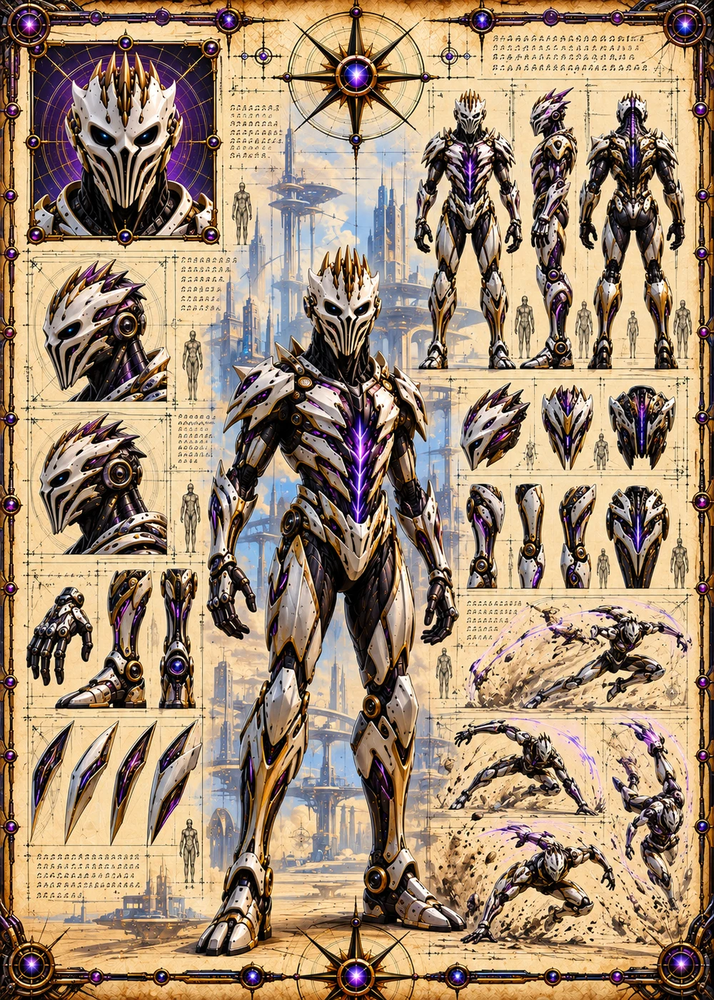

©
©
GENEZYS ARCHIVE · Earth 2 · Synthbot
Griv
Artifact Ranger

Archive record
Griv hunts relics on Earth 1, and anyone who comes for Griv's relics regrets it. The Degrade Zone waits for the next enemy who dares to use a special against Griv, then rots them from the inside. Griv's pilot claims to have found something on Earth 1 that the Corsairs were never meant to find.
Combat signature
Degrade Zone
160 Cosmara
230 Animus
270 Vitalis
Spreads field of accelerated pathogen: The next time enemy uses special skill against this card, that enemy suffers 210 damage.
Genezys 06:05 ™&©2026LEGIONS
